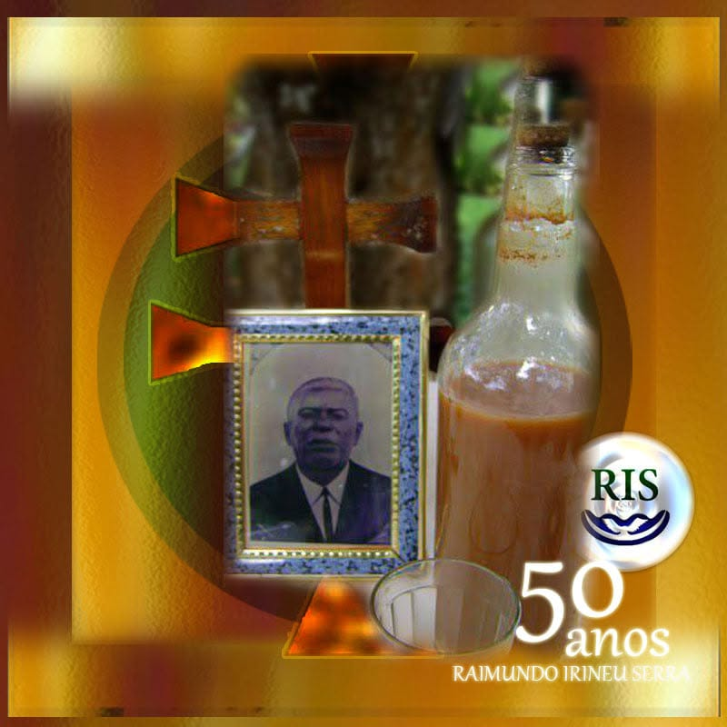

Página de segundo nível · Homenagem
Homenagem ao Mestre Canto Ensino RIS
RAIMUNDO IRINEU SERRA

Uma vida de canto e ensino
Esta página é dedicada à memória de Raimundo Irineu Serra, aos ensinamentos transmitidos pelo canto e à preservação da história da Santa Doutrina.
A cronologia, os depoimentos e a identificação dos companheiros serão acrescentados após pesquisa e conferência documental, distinguindo tradição oral, testemunho e referência histórica.


Variante “55 anos” reservada para produção artística independente, sem substituir esta imagem original ou atribuir uma data sem verificação.